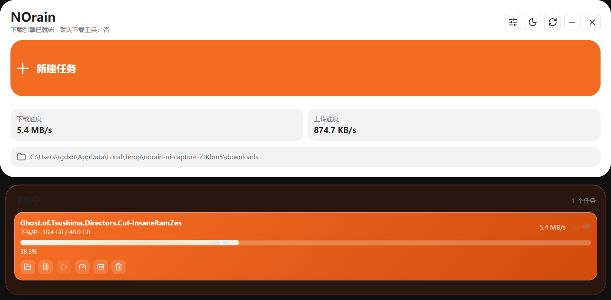
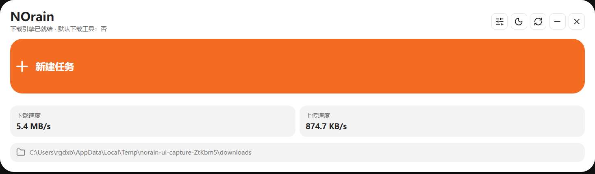
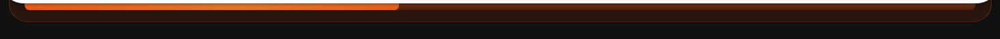
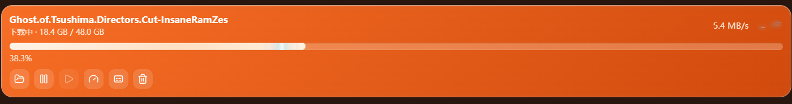

自动读懂剪贴板
进入新建任务时，自动判断普通链接、磁力链接、种子文件或视频页面，并填入对应信息。
magnet:?xt=urn:btih:READY
WINDOWS DOWNLOAD CONTROL
链接、磁力、BT、在线视频和字幕工作统一收束。复制，确认，然后让 NOrain 全速前行。
浏览器能完成的小事，不必交给它。
进入新建任务时，自动判断普通链接、磁力链接、种子文件或视频页面，并填入对应信息。
aria2 负责链接与 BT，yt-dlp 与 ffmpeg 接管视频流。
扩展捕获浏览器下载，把任务送回桌面端统一处理。
打开种子后按文件挑选内容，不必把几十 GB 的无关内容一起带走。
从下载中的任务名提前检索，到完整文件的影片哈希匹配，再到容器内嵌字幕提取，所有结果进入同一条选择路径。
API Key 只写入本机运行目录。没有在线密钥时，本地扫描、内嵌提取和视频页面字幕依然可用。

纯界面、任意空白处拖动，窗口随内容自动伸展。

默认只露出完整进度轨道，靠近后展开任务详情。

最快任务拥有沿弧形边缘流动的高光，而不是无意义装饰。

关闭界面后引擎继续运行，双击托盘即可回来。
完成与失败只提醒一次，点击通知直接定位任务。
单次或每日执行，重启后依旧保留下一次运行时间。
分别控制全局下载、上传、并发数量与单任务速度。
BUILD IT LOCALLY
从源码构建
> npm install
> npm run desktop需要 Windows 与 Node.js 20+。首次运行会准备下载引擎。